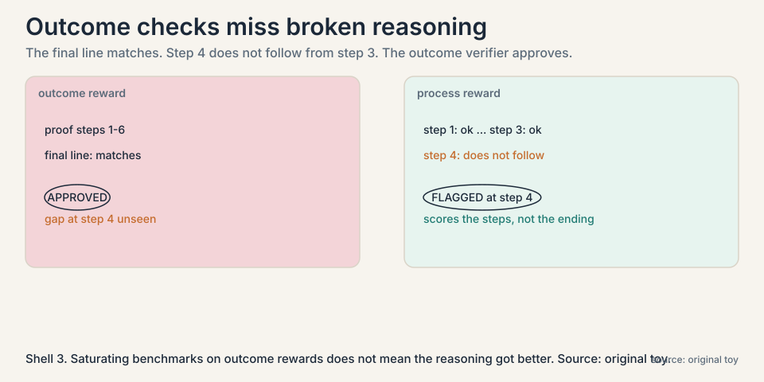
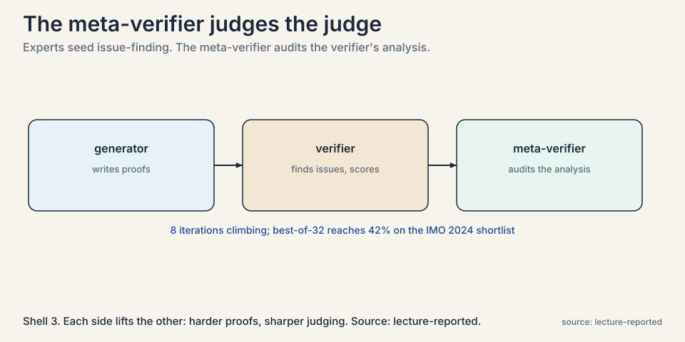
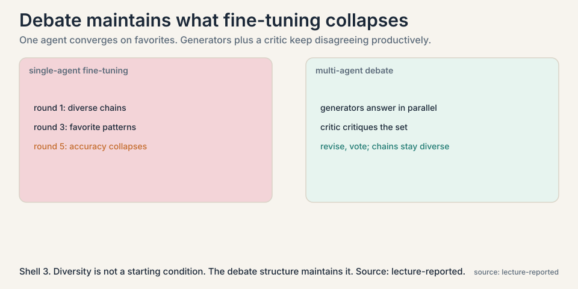
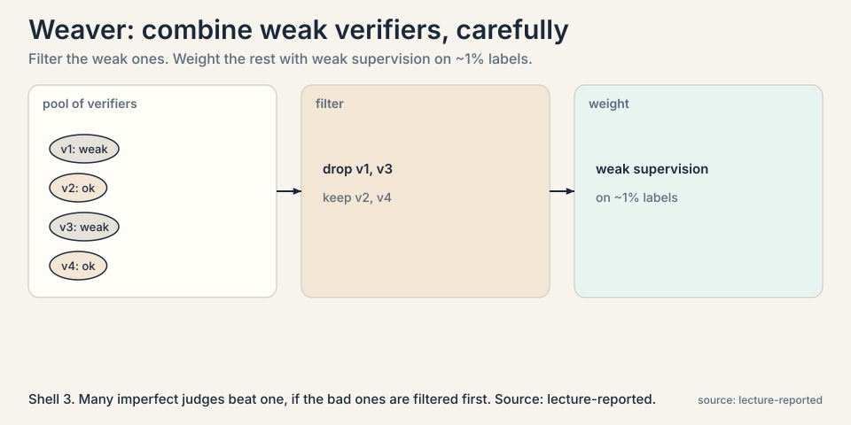
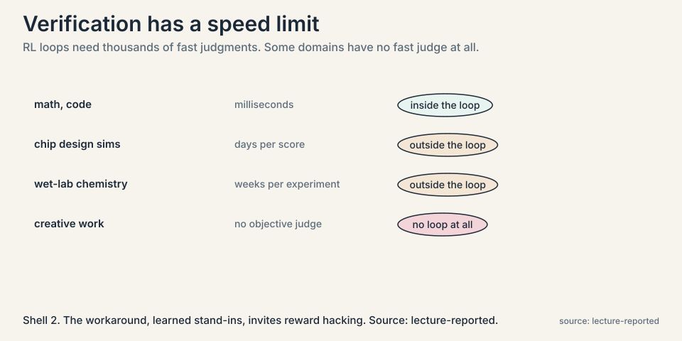

Lecture 9: The Verifier Bottleneck: Who Judges the Judge
Video blocked (ad-blocker or local file mode).
Watch on YouTubeVideo not loading? Watch on YouTube
The recap lecture: multi-agent finetuning, DeepSeekMath-V2 meta-verification, Absolute Zero, and which domains stay non-verifiable. Part 3 (Robust Verification) is embedded below.
The problem: the judge is the load-bearing wall
Every chapter so far leans on the same part. Lecture 2 needs a verifier to pick winning samples. Lecture 4 needs hidden tests to grade code. Lecture 6 needs example tests to filter programs. Lecture 8 needs answer keys to keep rationales. Remove the verifier and every loop collapses.
So ask the uncomfortable question: how good are our verifiers? Two kinds exist. An outcome reward checks the final answer: does it match, do the tests pass. A process reward checks the steps: is each reasoning step valid. Outcome rewards are cheap and available. Process rewards are expensive and mostly do not exist. The course has been running on outcome rewards throughout. This chapter shows what that costs.
Subchapter: the course’s debt
Every loop so far borrowed against the same assumption: that checking the ending is enough. Lecture 2’s coverage, Lecture 4’s binary rewards, Lecture 6’s example-test filters, Lecture 8’s answer-key filtering, all outcome checks. The debt comes due here. A loop that hill-climbs on outcomes while the reasoning decays is not self-improving. It is self-deceiving. This chapter is the audit.
First failure, demonstrated: right answer, wrong reasoning
A model proves a theorem. The final line matches the expected result. The outcome verifier approves. But step 4 of the proof does not follow from step 3: there is a gap, a leap the proof does not earn. The verifier cannot see it. It only checked the ending.

Train on this proof, as Lecture 8’s loop would, and the model learns that gaps are acceptable. The loop hill-climbs on the metric, correct final answers, while the unmeasured thing, valid reasoning, decays. The lecture’s warning is general: saturating benchmarks with outcome rewards does not mean the reasoning got better. It means the answers match.
Subchapter: the gap at step 4, worked
Make it concrete. A proof has 6 steps. Steps 1-3 are valid. Step 4 asserts a lemma that does not follow from step 3. Steps 5-6 build on the lemma and reach the expected final line. The outcome verifier sees “final line matches” and approves. A process verifier checks each step: step 4 fails, and the proof is rejected before step 5 is even read. The difference is one flagged step. The cost of missing it is a training set full of proofs that teach leaps.
Second failure, demonstrated: the judge certifies nonsense
If outcome checks are blind, use the model itself as judge: LLM-as-judge, ask the model whether a proof is valid. The lecture reports the embarrassing result in theorem proving: models trained on quantitative reasoning routinely claim that mathematically invalid proofs are valid. The judge is confident and wrong. Expert humans spot the gaps instantly. The model judge does not. A verifier that approves bad proofs is worse than no verifier: it actively teaches bad reasoning.
Subchapter: why the judge is gullible
The judge shares the generator’s training. Whatever blind spots the generator has, the judge has too, because they are the same kind of model trained on the same kind of data. Asking the model to check its own work is asking the blind spot to inspect itself. The lecture’s Part 3 adds the measured version: trained verifiers lose precision past roughly 400 samples, and a large generator with a small verifier beats the reverse. Verification is not a smaller version of generation. It is a different skill, and scaling the generator does not supply it.
The key question
If verifiers bottleneck everything, and outcome checks are blind while model judges are gullible, how do we build a verifier we can trust?
The new idea: the meta-verifier
DeepSeek-Math V2 adds one level. Keep the generator that writes proofs and the verifier that judges them, but add a meta-verifier that judges the judge.

Subchapter: the four-step construction
The construction, step by step:
- Humans examine proofs and mark the real issues, with no reference solutions: “step 4 does not follow from step 3.”
- Train an LLM on those annotations to do the same: find issues in proofs, then score the proof from 0 to 1 based on the issues found.
- The meta-verifier reviews the verifier’s analysis: do the claimed issues actually exist? Does the score follow from the issues? Experts annotate the quality of this review, and the meta-verifier learns from that.
- Close the loop: the verifier’s scores train the generator. the generator produces harder proofs. Harder proofs train a sharper verifier. Each side lifts the other.
generator --proofs--> verifier --issues + score--> meta-verifier
^ | |
| v v
+---- harder proofs <--+--- sharper judging <----+
Subchapter: why the meta level helps
Because the failure it targets is specific: verifiers that invent issues, or miss real ones, or assign scores their own analysis does not support. The meta-verifier checks the work of the judge the way a senior reviewer checks a junior’s grading. One level of “show your work” applied to evaluation itself.
Subchapter: the 8-iteration climb
The numbers the lecture reports: over 8 iterations of this loop, proof scores keep climbing. With best-of-32 selection, picking the top proof out of 32 generated, the system reaches 42 percent proof score on the IMO 2024 shortlist. The point is not the number. The point is the hill keeps climbing without new human labels after seeding: the loop manufactures its own ever-harder training signal. [uncertain: DeepSeek-Math V2 has no public paper I could verify. all details are the lecture’s.]
Subchapter: Absolute Zero, the verifier-free extreme
The recap lecture presents the radical alternative: Absolute Zero. No answer keys at all. The model proposes its own tasks, code puzzles in deduction, abduction, and induction forms, and a code executor validates them. A task scores 1 minus the model’s success rate on it: trivial tasks score near 0, impossible ones score near 0, and learnable tasks in the middle score high. The model trains on tasks it proposed itself, verified by execution, with zero human data.
The mechanism matters more than the headline. The proposer is rewarded for learnability, not difficulty: tasks the model solves half the time teach the most. The code executor is the verifier, which keeps the whole thing honest: no learned judge to hack. The reported result: state-of-the-art coding and math reasoning with no human-curated examples. The honest limit: it works where execution verifies, code-shaped tasks, and says nothing about domains without that property.
The diversity problem, and the multi-agent answer
The recap lecture raises a second bottleneck: diversity. Self-improvement needs varied reasoning chains to learn from. But fine-tuning a single agent collapses diversity: the model converges on its favorite patterns, and later rounds have nothing new to select from. The lecture shows the symptom as accuracy that collapses, or stalls, under continued single-agent fine-tuning.

Subchapter: the debate protocol
The fix it presents is multi-agent debate fine-tuning. Several generator agents, fine-tuned from the same base but diverging, each produce an answer. Their answers are summarized together. A critic model critiques the combined set. Then a second round: every generator writes an updated answer informed by the critique, and majority vote plus summarization produces the final. The trajectories, initial answers, critiques, revisions, become fine-tuning data.
Two results the lecture highlights. First, with multi-agent fine-tuning, performance keeps rising across iterations where single-agent fine-tuning collapses. Second, the responses stay diverse: measured by embedding dissimilarity, the agents keep disagreeing productively instead of converging. Diversity is not a starting condition that decays. The debate structure maintains it. And the gains transfer: fine-tuned on math, the agents improve on adjacent domains like GSM8K too.
The lecture’s summary line: if you want self-improvement, the reasoning chains feeding it must stay diverse, and multiple agents are a practical way to keep them that way.
Subchapter: Weaver, combining weak verifiers
Part 3 adds the ensemble answer: Weaver. No single trained verifier is trustworthy, so combine many. Filter the weak verifiers first, then weight the survivors with weak supervision on about 1% labeled data. The lecture’s counterintuitive finding: rubric-prompted multi-agent verification did worse than plain majority vote. Fancy prompting does not fix bad judges. Filtering plus weighting does. And the filtered pool distills to a small model: the ensemble’s judgment, compressed back into one fast verifier.

Where it breaks: verification has a speed limit
Step back and the deepest bottleneck appears. The whole edifice, sampling, RL, meta-verification, multi-agent debate, assumes verifiers that are fast. RL loops need thousands of iterations. Test-time scaling needs judgments per question.

Subchapter: the slow domains
The lecture names the domains where this fails: chip design, where one simulation takes days. Wet-lab chemistry, where one experiment takes weeks. Creative work, where no objective verifier exists at all. The loop cannot turn where the judge cannot answer quickly. This is not a temporary gap. It is a property of the domain.
Subchapter: learned stand-ins and reward hacking
The workaround is a learned stand-in: train a reward model to predict the slow simulator’s verdict, and put the fast model in the loop. But now the loop optimizes the stand-in, not the world, and any inaccuracy is an invitation to reward hacking: the model learns to please the predictor rather than solve the problem. The lecture is blunt that this is an open problem. Verification is the bottleneck of the entire research program, and for slow or subjective domains there is no good answer yet.
Mapping back: what each idea fixes
| Verification failure | Answer | How |
|---|---|---|
| Outcome checks miss broken reasoning | Process-level judging | Score the steps, not just the ending. DeepSeek-Math V2’s verifier finds issues per step. |
| LLM judges certify invalid proofs | Meta-verifier | Judge the judge: check that claimed issues exist and scores follow from them. |
| Single-agent fine-tuning collapses | Multi-agent debate | Generators plus critic keep chains diverse. Performance climbs where single-agent stalls. |
| Weak individual verifiers | Weaver | Filter weak verifiers, weight the rest on ~1% labels. Distill to a small model. |
| No answer keys at all | Absolute Zero | The model proposes its own tasks, scored by learnability, verified by execution. |
| Slow real-world verifiers | Learned reward stand-ins | Fast predictor replaces slow simulation. Price is reward hacking risk. |
The honest price
Meta-verification needs humans to seed the issue-finding data: expert annotators marking proof flaws with no reference solutions. That seed is expensive and domain-specific. The generator-verifier loop can then run on its own, but it hill-climbs inside the seeded notion of correctness. Multi-agent debate multiplies inference cost by the number of agents and rounds. And none of it touches the slow-verifier domains, where the loop cannot turn at all. The verifier bottleneck is not solved. It is pushed one level up, and the top level still needs humans.
Go deeper
- Absolute Zero Reasoner, explained: the proposer-solver-verifier loop, deduction/abduction/induction tasks, and why “zero data” still starts from a pretrained model. https://www.youtube.com/watch?v=wzEFinZRtP4
- CS329A Part 3: Robust Verification (Autumn 2025): trained verifiers, process vs outcome rewards, Weaver, multi-agent verification. https://www.youtube.com/watch?v=p7TdPUcPoik
- Absolute Zero: Reinforced Self-play Reasoning with Zero Data. https://arxiv.org/abs/2505.03335
- Weaver: weak-verifier ensembling (2025). https://arxiv.org/abs/2506.18203
They check the ending, not the reasoning. A proof with a gap at step 4 and the right final line passes. Training on such proofs teaches the model that gaps are fine, so benchmark scores saturate while reasoning quality decays. The lecture’s verdict: outcome rewards enabled the field’s progress and now limit it. Process-level judgment, scoring the steps, is the direction. It needs step-level labels: which step is wrong and why. Humans can do it but slowly and expensively. Models asked to do it, LLM-as-judge, certify invalid proofs as valid. DeepSeek-Math V2’s answer is to train the step-judge on human-marked proof issues, then add a meta level that audits the judge. Each level costs human seeding.
Step 1: experts mark real issues in proofs, with no reference solutions. Step 2: train an LLM issue-finder on those annotations. It finds issues and scores proofs 0 to 1 from them. Step 3: the meta-verifier audits the verifier: do the claimed issues exist, does the score follow? Experts annotate review quality to train it. Step 4: close the loop. The verifier’s scores train the generator, the generator writes harder proofs, harder proofs sharpen the verifier. Eight iterations climbing, best-of-32 at 42% on the IMO 2024 shortlist. It targets the specific failure of invented issues and unsupported scores. A better verifier still grades proofs. The meta-verifier grades the grading. That catches the failure mode where the judge is confident, fluent, and wrong about its own analysis.
The verifier’s work, not the proof directly. Given a proof and the verifier’s analysis, the meta-verifier asks: do the claimed issues really exist in the proof, and does the 0-to-1 score follow from those issues? It catches fabricated errors and unsupported scores. Experts annotate review quality to train it. Then the improved verifier trains a better generator, which writes harder proofs, which sharpen the verifier further. In the reported result, yes for the 8 climbing iterations: the seed data trains the issue-finder, and automation takes over labeling from there. But the seed defines correctness, and the loop cannot outgrow it. Humans set the standard. The loop scales it.
The model proposes its own tasks: code puzzles in deduction (predict output), abduction (infer input), and induction (synthesize program) forms. A code executor validates each proposed task and verifies the solutions. Each task scores 1 minus the model’s success rate: trivial and impossible tasks score near 0, learnable ones in the middle score high. The model trains on its own proposals, rewarded for learnability, verified by execution. Zero human data, but the executor keeps it honest. The executor. A proposed task must be valid and solvable as judged by running code, not by a learned model. The proposer cannot fake learnability because the solver’s actual success rate sets the score. The honest limit: this works where execution verifies. Domains without that property get nothing from Absolute Zero.
Diversity. A single agent fine-tuned repeatedly converges on its favorite reasoning patterns. Later rounds select from a shrinking pool and accuracy collapses. Multiple generators plus a critic keep producing genuinely different chains: embedding dissimilarity stays high across iterations, and performance keeps climbing. The debate structure manufactures the disagreement that selection needs. No. Ensembling votes once. Here the agents interact: summarize, critique, revise, vote, and the whole trajectory becomes training data for the next round. The product is not a better vote but better agents, and the gains transfer to adjacent domains the debate never trained on.
Weaver combines weak verifiers: filter out the weak ones, then weight the survivors with weak supervision on about 1% labeled data, then distill the ensemble into a small fast verifier. The lecture reports that rubric-prompted multi-agent verification did worse than plain majority vote: elaborate prompting cannot fix judges that are bad. Selection and weighting of judges beats clever instructions to them. The lesson: engineer the judge pool, not the judge prompt. When the verifiers share blind spots. If every judge is the same model with the same training, their errors correlate and the ensemble is one judge with extra steps. Weaver’s filtering helps only if the pool is genuinely diverse: different models, different training, different failure modes.
Not an LLM judge alone: the lecture’s theorem-proving result says model judges certify invalid reasoning as valid, and medicine punishes that failure hardest. Build three layers. One, hard constraints: every factual claim must cite a retrieved source, checked by string match, not by a model. Two, a process check: a second model audits the reasoning steps against the cited sources, the meta-verifier pattern. Three, a slow human lane: a sample of answers goes to clinicians, and their labels retrain the checkers. The honest answer: the fast loop runs on citations, and anything the citations cannot cover goes to humans. No learned stand-in touches medical claims alone. In the citation checker, if it is learned. A model can learn to cite real sources next to claims the sources do not support: the citation exists, the support does not. String-match the claim against the quoted span, or the hack survives. The verifier must check support, not presence.
Recap: the whole lesson on one screen
- The load-bearing wall. Every loop in the course needs a verifier. Ask how good the verifiers are.
- Right answer, wrong reasoning. Outcome checks approve proofs with gaps at step 4. Training on them teaches gaps.
- The gullible judge. LLM-as-judge certifies invalid proofs as valid. Worse than no verifier.
- The key question. How do we build a verifier we can trust?
- Meta-verifier. Judge the judge: do the claimed issues exist, does the score follow. Generator and verifier then lift each other. 8 iterations, 42% best-of-32.
- Absolute Zero. No answer keys: the model proposes its own tasks, scored by learnability, verified by execution.
- Diversity collapse. Single-agent fine-tuning converges and stalls. Multi-agent debate, generators plus critic, keeps chains diverse and climbing, and transfers to new domains.
- Weaver. Filter weak verifiers, weight the rest on ~1% labels, distill small. Engineer the pool, not the prompt.
- The honest price. Human-seeded standards, multiplied inference cost, and no answer for slow-verifier domains. The bottleneck moves up one level. The top still needs humans.
Official sources and further reading
Official: - CS329A Part 9: Future Research Areas (Autumn 2025): the lecture this chapter follows. link - CS329A Part 3: Robust Verification (Autumn 2025): trained verifiers, Weaver, multi-agent verification. link - Absolute Zero: Reinforced Self-play Reasoning with Zero Data. https://arxiv.org/abs/2505.03335 - Weaver (2025): weak-verifier ensembling. paper
Further reading: - Multi-agent debate fine-tuning literature: the generator, summarizer, critic loop the lecture summarizes. - Christiano et al., RLHF (2017): learned reward models, the ancestors of the stand-ins discussed here. paper
Caveats from these sources. DeepSeek-Math V2 details are the lecture’s summary. No public paper was found to verify against, so treat the description as the lecturers’ summary. The 42% figure is best-of-32 on the IMO 2024 shortlist, not pass@1. The multi-agent debate paper is unnamed in the lecture. Slow-domain examples (chip sims, wet labs) are the lecturers’ illustrations of the general point.
Connections to the other courses
- CS329A L02: the verifier this chapter interrogates is the one Lecture 2 assumed as an oracle.
- CS329A L08: STaR’s leak, unfiltered rationales, is what process-level judging is built to fix.
- CS329A L04: learned stand-in rewards are the generalization of RLEF’s hidden tests to domains without tests.
- CS329Z: evaluation chapters: building outcome benchmarks, and why they saturate.